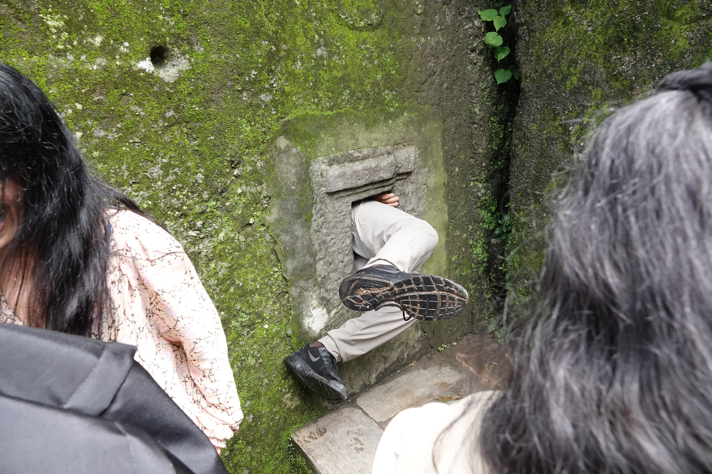
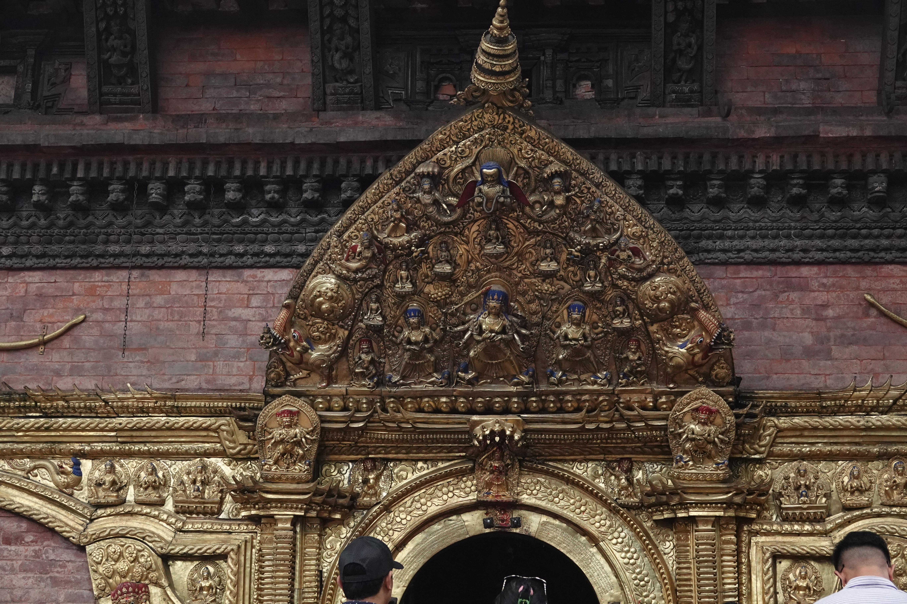
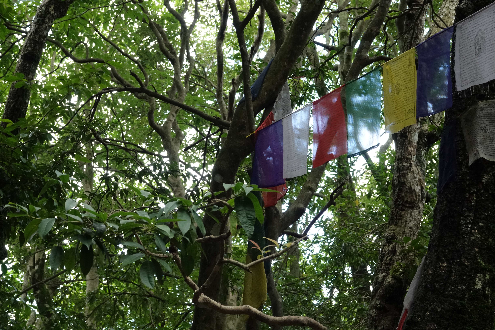
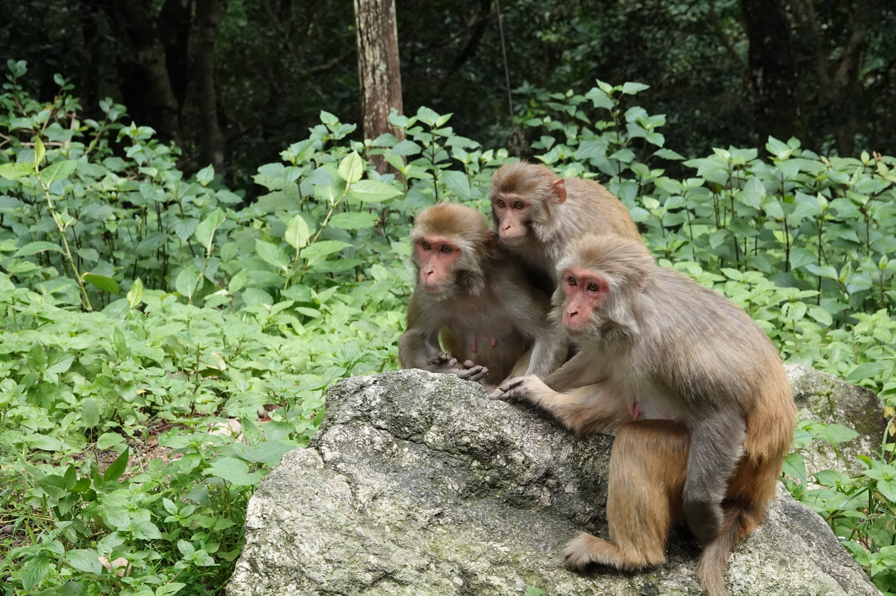
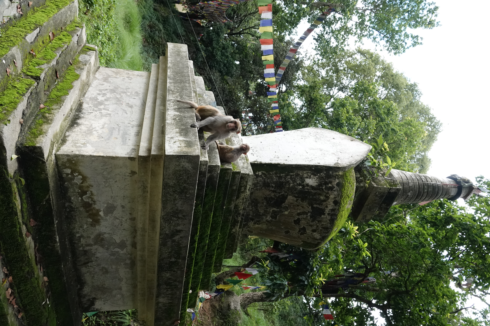

Sankhu is a beautiful little town about an hour from Kathmandu. It is known for the sacred Vajrayogini temple,
a cave where Milarepa is said to have meditated, and a monument to Nagarjuna. I got to visit the temple, hike to Milarepa cave,
and attend a teaching at the Zen center nearby.

It is supposedly good luck if you can fit thorugh this hole in the side of a cave.

The Vajrayogini temple.

Prayer flags in the forest between the Vajrayogini temple and Milarepa cave.

Monkeys intently watching me as I passed by.

A stupa in the woods.
Swayambhu
Another of the most famous stupas in Kathmandu. There are great views of the city, and lots of monkeys who hang out there.